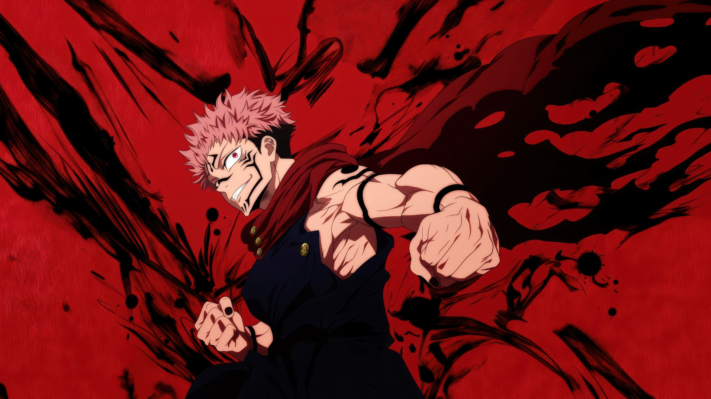

Ryomen Sukuna is an ancient curse of overwhelming power, cruelty, and dominance. His presence turns fear into certainty, and every battle becomes a display of absolute authority.
Sukuna does not seek approval, balance, or peace. He embodies destruction, confidence, and ancient malice. His red aura theme is meant to feel dangerous and alive.
Sukuna’s page uses a pulsing crimson aura to create a cursed, threatening look. The glow around his image is designed to feel unstable, violent, and dominant, matching the overwhelming presence of the King of Curses.